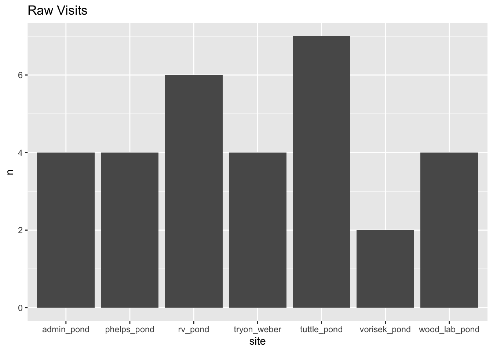

The 'cran_repo' argument in shelf() was not set, so it will use
cran_repo = 'https://cran.r-project.org' by default.
To avoid this message, set the 'cran_repo' argument to a CRAN
mirror URL (see https://cran.r-project.org/mirrors.html) or set
'quiet = TRUE'.
Connect to survey_data schema in ribbitr database
tryCatch({ drv <-dbDriver("Postgres")print("Connecting to Database…") connection <-dbConnect(drv,dbname =Sys.getenv("aws_dbname"),host =Sys.getenv("aws_host"),port =Sys.getenv("aws_port"),user =Sys.getenv("aws_user"),password =Sys.getenv("aws_password"),timezone=NULL)print("Database Connected!") },error=function(cond) {print("Unable to connect to Database.") })
[1] "Connecting to Database…"
[1] "Database Connected!"
#search pathdbExecute(connection, "set search_path to survey_data")
[1] 0
Query 2022 CMR Penn data
# Datacmr_q <-"select r.region, s.site, v.date, v.survey_time, s2.duration_minutes, c.species_capture, c.capture_type from region r join site s on r.region_id = s.region_id full join visit v on s.site_id = v.site_id join survey s2 on v.visit_id = s2.visit_id join capture c on s2.survey_id = c.survey_id where r.region = 'pennsylvania' and v.date > '2022-01-01';"raw_data <-dbGetQuery(connection, cmr_q) %>%select(!c(region, survey_time, duration_minutes)) %>%arrange(date)# find all visitsvisit_cmr_q <-"select r.region, s.site, v.date, v.survey_time from region r join site s on r.region_id = s.region_id join visit v on s.site_id = v.site_id where r.region = 'pennsylvania' and v.date > '2022-01-01';"raw_visits <-dbGetQuery(connection, visit_cmr_q) %>%arrange(date) %>%select(site, date)
Visualize all Visits
viz <- raw_visits %>%group_by(site) %>%summarise(n =n())ggplot(data = viz) +geom_col(aes(x=site, y = n)) +ggtitle("Raw Visits")

Clean up species list with counts
Filter for CMR focal species and summarize species counts. Then populate zeros for 3 focal species into the data set for visits when captures did not occur.
# filter for CMR focal species and summarize countsmid_clean_up <- raw_data %>%filter(species_capture %in%c("pseudacris_crucifer", "rana_catesbeiana", "rana_clamitans")) %>%mutate(capture_type =if_else(is.na(capture_type), "new", capture_type)) %>%group_by(date, site, species_capture) %>%summarise(n =n()) %>%ungroup()
`summarise()` has grouped output by 'date', 'site'. You can override using the
`.groups` argument.
Warning in left_join(., mid_clean_up): Detected an unexpected many-to-many relationship between `x` and `y`.
ℹ Row 1 of `x` matches multiple rows in `y`.
ℹ Row 34 of `y` matches multiple rows in `x`.
ℹ If a many-to-many relationship is expected, set `relationship =
"many-to-many"` to silence this warning.
rana_catesbeiana
Table formatting
Filter data for rana_catesbeiana, tally the numbner of visits, pivot data frame into correct matrix form, and finally populate zeros into the NAs if sites were visited.
unmarkedFrame Object
7 sites
Maximum number of observations per site: 7
Mean number of observations per site: 4.29
Sites with at least one detection: 6
Tabulation of y observations:
0 1 2 3 4 5 6 7 9 11 13 14 15 20 22 29
7 1 1 2 2 1 1 1 1 1 2 1 2 2 1 2
31 39 <NA>
1 1 19
fm1 <-pcount(~1~1, data = umf)
Warning in pcount(~1 ~ 1, data = umf): K was not specified and was set to 139.
# Get estimates on link scale backTransform(fm1, "state")
Backtransformed linear combination(s) of Abundance estimate(s)
Estimate SE LinComb (Intercept)
40.7 7.97 3.71 1
Transformation: exp
# Get estimates on natural scalebackTransform(fm1, "det")
Backtransformed linear combination(s) of Detection estimate(s)
Estimate SE LinComb (Intercept)
0.232 0.0421 -1.2 1
Transformation: logistic
Assuming the sites and enviro variables are exactly the same we can say there is 40.7 +-7.9 frogs at these sites and we are only detecting 23% of the frogs.
unmarkedFrame Object
7 sites
Maximum number of observations per site: 7
Mean number of observations per site: 4.29
Sites with at least one detection: 4
Tabulation of y observations:
0 1 2 3 4 16 <NA>
23 1 2 1 2 1 19
fm1 <-pcount(~1~1, data = umf)
Warning in pcount(~1 ~ 1, data = umf): K was not specified and was set to 116.
backTransform(fm1, "state")
Backtransformed linear combination(s) of Abundance estimate(s)
Estimate SE LinComb (Intercept)
85.8 24.4 4.45 1
Transformation: exp
backTransform(fm1, "det")
Backtransformed linear combination(s) of Detection estimate(s)
Estimate SE LinComb (Intercept)
0.0124 0.00411 -4.38 1
Transformation: logistic
# assuming the sites and enviro variables are exactly the same we say there is 85.7 +-24.4 frogs at these sites and we are only detecting 1.2% of the frogs.
unmarkedFrame Object
7 sites
Maximum number of observations per site: 7
Mean number of observations per site: 4.29
Sites with at least one detection: 7
Tabulation of y observations:
0 1 2 3 5 7 8 10 16 19 22 <NA>
8 4 5 5 1 2 1 1 1 1 1 19
fm1 <-pcount(~1~1, data = umf)
Warning in pcount(~1 ~ 1, data = umf): K was not specified and was set to 122.
backTransform(fm1, "state")
Backtransformed linear combination(s) of Abundance estimate(s)
Estimate SE LinComb (Intercept)
94.8 13.1 4.55 1
Transformation: exp
backTransform(fm1, "det")
Backtransformed linear combination(s) of Detection estimate(s)
Estimate SE LinComb (Intercept)
0.0434 0.00693 -3.09 1
Transformation: logistic
# assuming the sites and enviro variables are exactly the same we say there is 94.8 +-13.1 frogs at these sites and we are only detecting 4.3% of the frogs.
Warning in left_join(., mid_clean_up): Detected an unexpected many-to-many relationship between `x` and `y`.
ℹ Row 1 of `x` matches multiple rows in `y`.
ℹ Row 38 of `y` matches multiple rows in `x`.
ℹ If a many-to-many relationship is expected, set `relationship =
"many-to-many"` to silence this warning.
Warning: Values from `n` are not uniquely identified; output will contain list-cols.
• Use `values_fn = list` to suppress this warning.
• Use `values_fn = {summary_fun}` to summarise duplicates.
• Use the following dplyr code to identify duplicates.
{data} %>%
dplyr::group_by(site, n_visit) %>%
dplyr::summarise(n = dplyr::n(), .groups = "drop") %>%
dplyr::filter(n > 1L)